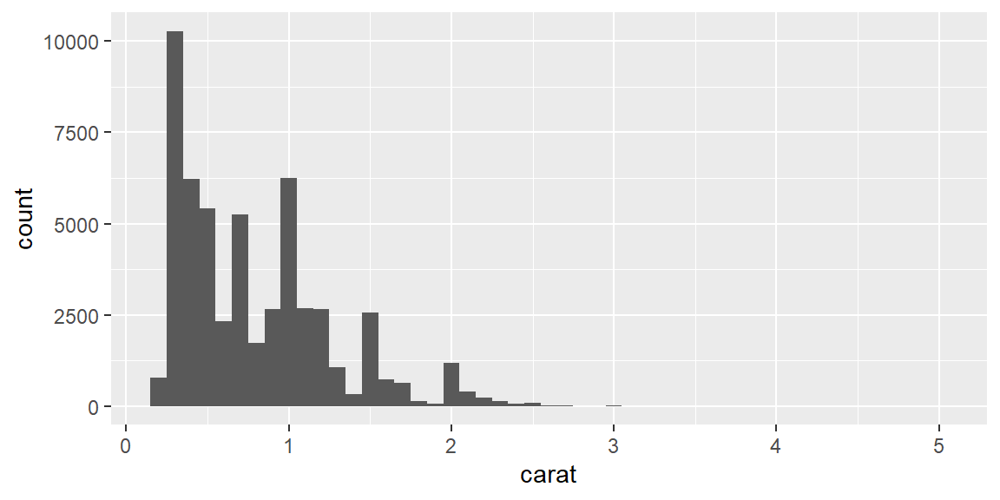
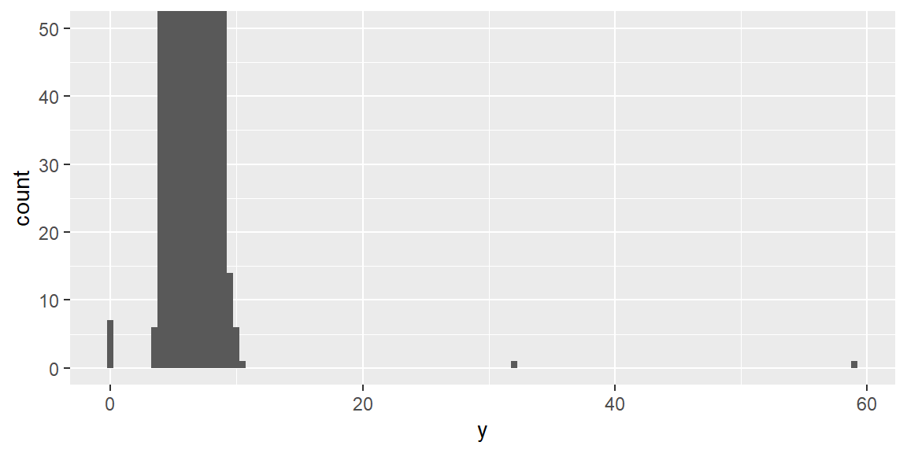
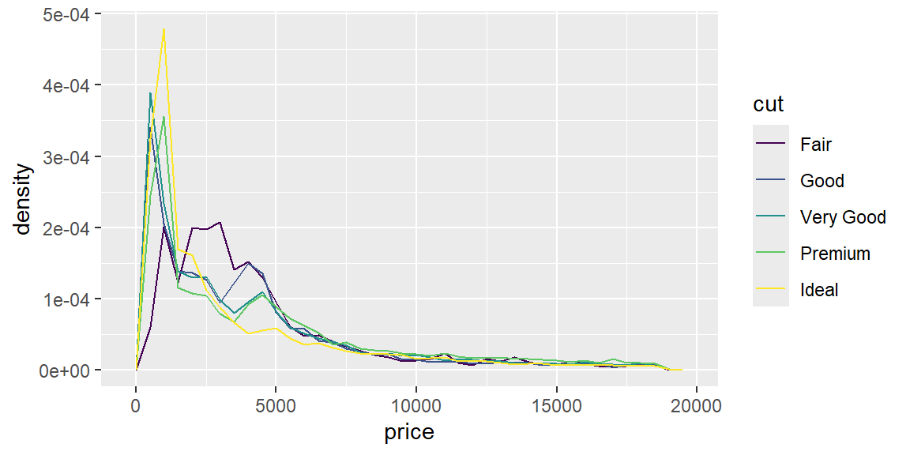
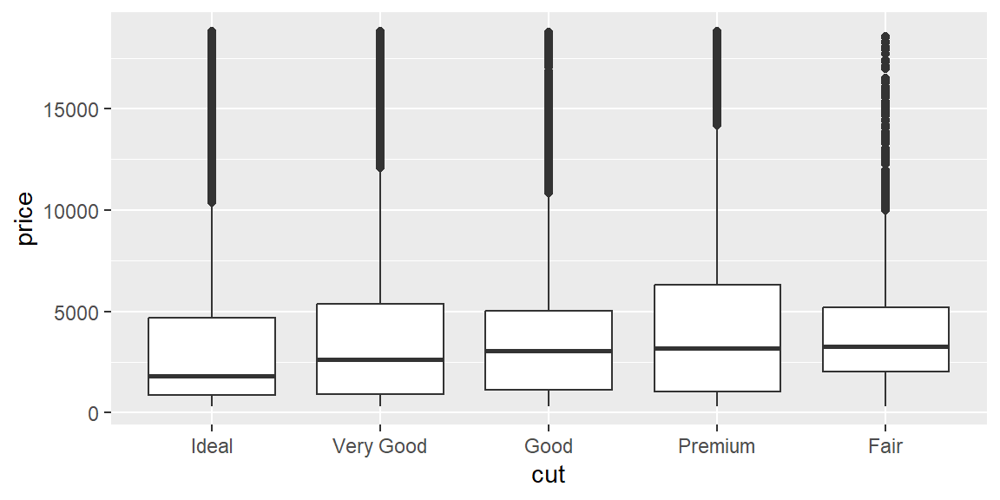
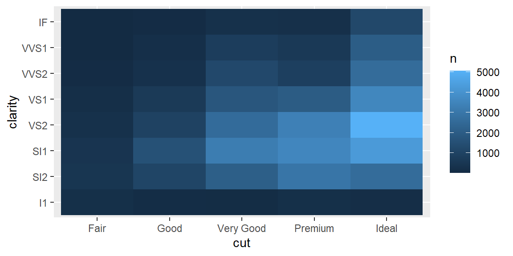
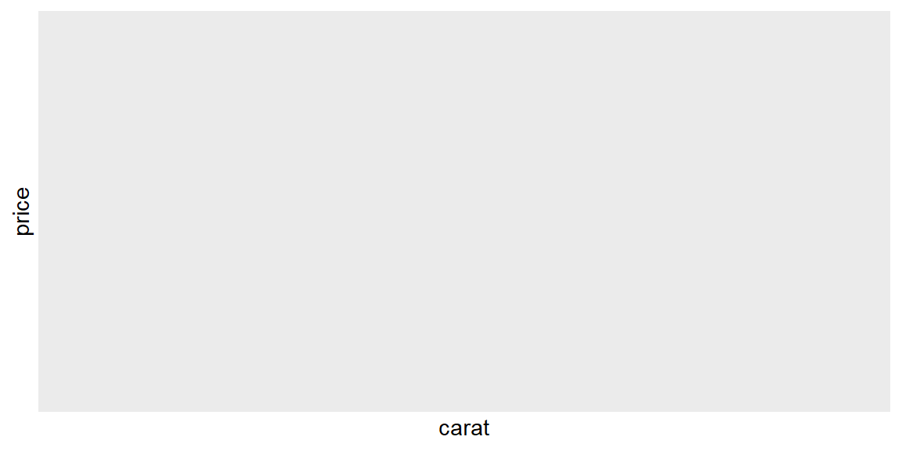
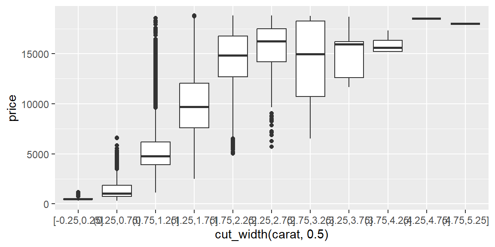
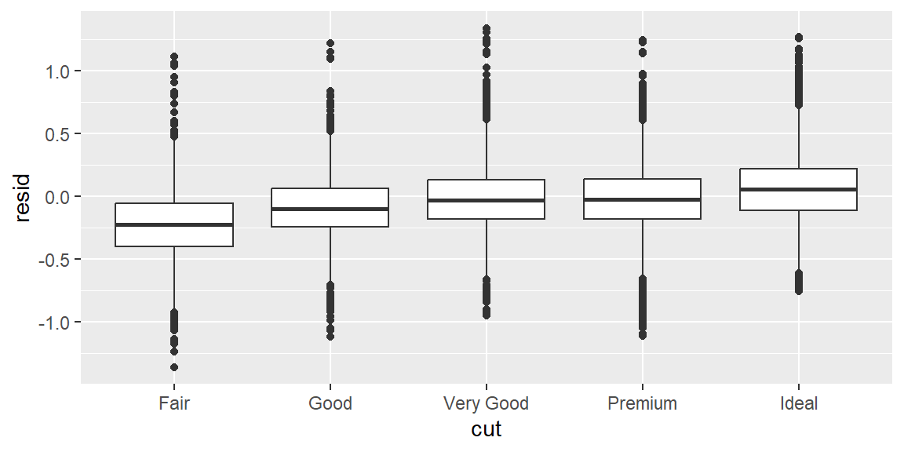
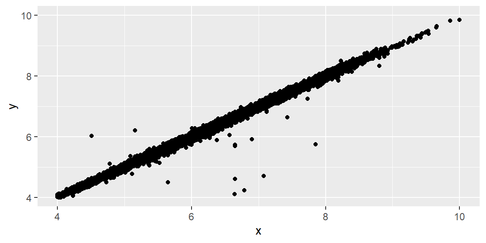

library(tidyverse)22 Exploratory data analysis (EDA)
Objectives
- Take a question-driven approach to EDA. Exploratory data analysis is an iterative cycle: generate questions about your data, search for answers by visualizing, transforming, and modeling, and use what you learn to ask new questions. There is no rigid procedure; investigate many ideas and follow up on interesting patterns.
- Recognize variation and typical values. Variation is the tendency of a variable’s values to change from one observation to the next. Visualizing variation with histograms or bar charts reveals typical values and unusual patterns.
- Identify and handle unusual values. Outliers may be data entry errors or genuine discoveries. Learn to zoom in without discarding data, and know the difference between a zoom that preserves every observation and one that quietly deletes some.
- Explore covariation between variables. Covariation is the tendency for two or more variables to vary together. Use boxplots, frequency polygons, heatmaps, scatterplots, and 2D binning to examine relationships between categorical and continuous variables, between two categorical variables, and between two continuous variables.
- Use models to isolate a relationship. A simple model can remove a known source of variation (like size) so that its residuals reveal a relationship that a raw comparison would get backwards.
- Summarize data to support EDA. Use
group_by(),summarise(),count(), andmutate()to compute counts, means, and proportions that complement visual exploration.
Notes
Introduction: question-driven exploration
Exploratory data analysis uses visualization and transformation to systematically explore data. It isn’t a formal procedure but an iterative cycle: generate questions, use plots and summaries to search for answers, and use those answers to refine the next question. Asking many questions early exposes you to different aspects of the data and improves your odds of finding something worth reporting. Two broad questions organize most of what follows: what kind of variation shows up within a single variable, and what kind of covariation shows up between variables?
Variation: exploring distributions
Variation is the tendency of a variable’s values to change from measurement to measurement, and visualizing the distribution is the most direct way to understand it: histograms and density plots for numeric variables, bar charts for categorical ones.
ggplot(diamonds, aes(x = carat)) +
geom_histogram(binwidth = 0.1)
Look for the most common values (tall bars) and the rare ones (short bars), and ask why each occurs; look for clusters, which can hint at subgroups worth exploring with another variable; and try more than one bin width, since a narrow bin width reveals fine structure that a wide one smooths away, and vice versa.
Unusual values and outliers
An outlier doesn’t fit the pattern of the rest of the data, and it can come from a data entry error, a genuinely unusual (but valid) observation, or a discovery worth reporting on its own. coord_cartesian() zooms into the region where most of the data lives without discarding anything, which is essential for spotting a rare value at all (it’s often invisible at the default, whole-dataset scale) without corrupting whatever else you compute from the same data (see Example 21.1 for exactly what goes wrong if you zoom the wrong way).
ggplot(diamonds, aes(x = y)) +
geom_histogram(binwidth = 0.5) +
coord_cartesian(ylim = c(0, 50))
Once you’ve found unusual values, you have two real options: drop the entire row (rarely a good default, since it discards everything else in that row too), or recode just the unusual value as NA with mutate() and if_else(), which keeps the rest of the observation intact. ggplot2 drops NAs automatically when plotting; add na.rm = TRUE if you’d rather not see the warning about it.
diamonds2 <- diamonds |> mutate(y = if_else(y < 3 | y > 20, NA, y))
sum(is.na(diamonds2$y))[1] 9Covariation: a categorical and a numerical variable
Comparing a numeric variable’s distribution across categories works best with geom_boxplot() for a compact summary, or geom_freqpoly() when you want to see the actual shape of each group’s distribution overlaid. Raw counts can be misleading when group sizes differ a lot (see Example 21.3); mapping after_stat(density) standardizes each group to the same total area, making shapes directly comparable regardless of how many observations are in each one.
ggplot(diamonds, aes(x = price, y = after_stat(density), color = cut)) +
geom_freqpoly(binwidth = 500)
ggplot(diamonds, aes(x = fct_reorder(cut, price), y = price)) +
geom_boxplot() +
labs(x = "cut")
fct_reorder() orders the categories by a summary of another variable (here, price) instead of alphabetically or by factor definition order, which usually makes the pattern in a plot like this easier to read at a glance.
Covariation: two categorical variables
When both variables are categorical, start by counting every combination with count(), then visualize with geom_tile() (fill mapped to the count) or geom_count() (point size mapped to the count).
diamonds |>
count(cut, clarity) |>
ggplot(aes(x = cut, y = clarity, fill = n)) +
geom_tile()
Covariation: two numerical variables
A scatterplot is the starting point for two continuous variables; alpha fights overplotting in a large dataset, and 2D binning (geom_bin2d(), geom_hex()) replaces individual overlapping points with a count per region entirely, which scales far better to tens of thousands of points.
ggplot(diamonds, aes(x = carat, y = price)) +
geom_hex()
Alternatively, cut_width() turns a continuous variable into discrete bins so you can compare its relationship to another variable with side-by-side boxplots, one per bin.
ggplot(diamonds, aes(x = cut_width(carat, 0.5), y = price)) +
geom_boxplot()
Patterns and models
A model can remove a relationship you already understand, so its leftovers (residuals) can reveal a second relationship that would otherwise be hidden behind, or confused with, the first one. Diamond price is overwhelmingly driven by carat (size), so fitting that relationship first and looking at what’s left over lets you compare diamonds of equivalent size to each other, rather than comparing a large Fair-cut diamond to a small Ideal-cut one.
diamonds2 <- diamonds |>
filter(carat < 2.5) |>
mutate(log_price = log(price), log_carat = log(carat))
carat_model <- lm(log_price ~ log_carat, data = diamonds2)
diamonds2 <- diamonds2 |> mutate(resid = resid(carat_model))
ggplot(diamonds2, aes(x = cut, y = resid)) +
geom_boxplot()
A positive residual means a diamond sold for more than its carat alone would predict; a negative one means it sold for less. Plotted this way, cut quality and price line up the way intuition suggests (see Example 21.4 for what the raw, uncontrolled comparison looks like, and why it looks backwards).
Summarizing with dplyr
Plots suggest patterns; numeric summaries pin them down precisely. group_by() and summarise() compute means, medians, counts, and proportions per group, and count() is a convenient shortcut when all you need is how many observations fall into each combination of categories. Pairing a summary table with the plot that motivated it is usually more convincing than either alone.
Fringe cases and common pitfalls
ExampleExample 21.1
xlim()/ylim() zoom by deleting data first; coord_cartesian() zooms without deleting anything, and only one of them warns you about it.
ggplot(diamonds, aes(x, y)) +
geom_point() +
xlim(4, 10) +
ylim(4, 10)Warning: Removed 478 rows containing missing values or values outside the scale range
(`geom_point()`).
ggplot(diamonds, aes(x, y)) +
geom_point() +
coord_cartesian(xlim = c(4, 10), ylim = c(4, 10))xlim()/ylim() (and setting limits on an individual scale) work by treating anything outside the given range as missing, which is why the first plot prints a real warning about hundreds of removed rows; the point is genuinely gone from the computation, not just off-screen. coord_cartesian() instead changes only which part of the already-fully-computed plot is visible, so nothing is removed and no warning appears. For a plot that’s just a scatterplot, the visual difference might be hard to spot; the moment a geom computes a statistic from the data (a geom_smooth() line, a geom_boxplot()’s quartiles, anything in Session 21’s Example 21.1), the two approaches can produce genuinely different numbers, not just different amounts of visible whitespace.
ExampleExample 21.2
A real dataset can contain physically impossible measurements, and they’re invisible until you actually go looking.
diamonds |> filter(x == 0 | y == 0 | z == 0) |> nrow()[1] 20diamonds |> filter(y > 20) |> select(carat, x, y, z, price)# A tibble: 2 × 5
carat x y z price
<dbl> <dbl> <dbl> <dbl> <int>
1 2 8.09 58.9 8.06 12210
2 0.51 5.15 31.8 5.12 2075Twenty diamonds in this dataset have a recorded length, width, or depth of exactly zero millimeters, which is not a real diamond; and at least one has a recorded width of nearly 59 millimeters (roughly the width of a golf ball) on a stone weighing only 2 carats, which is equally impossible. Both are almost certainly data entry errors, and both are essentially invisible in a plot of the whole dataset at its default scale, since a handful of extreme points among 54,000 observations barely register. This is exactly why deliberately zooming into the bulk of a distribution (Example 21.1’s coord_cartesian(), not xlim()/ylim()) is a standard early step in EDA: the outliers you’re looking for are, by definition, not where most of your attention is already drawn.
ExampleExample 21.3
Comparing raw counts across groups of very different sizes compares the sample sizes, not the shapes.
diamonds |> count(cut)# A tibble: 5 × 2
cut n
<ord> <int>
1 Fair 1610
2 Good 4906
3 Very Good 12082
4 Premium 13791
5 Ideal 21551Fair has 1,610 diamonds and Ideal has 21,551, more than a thirteen-fold difference, so a geom_freqpoly() of raw counts would show a tall, prominent curve for Ideal and a barely visible sliver for Fair, regardless of whether their underlying price distributions (as opposed to their sample sizes) actually differ much at all. Mapping y = after_stat(density) rescales every group’s curve to the same total area, so the comparison becomes “do these two groups have similarly shaped distributions,” which is almost always the more interesting EDA question, rather than “which group happened to have more rows in this dataset.”
ExampleExample 21.4
The raw relationship between cut and price runs backwards, until a model controls for size.
diamonds |> group_by(cut) |> summarize(mean_price = mean(price))# A tibble: 5 × 2
cut mean_price
<ord> <dbl>
1 Fair 4359.
2 Good 3929.
3 Very Good 3982.
4 Premium 4584.
5 Ideal 3458.Averaged directly, Fair-cut diamonds sell for more than Ideal-cut diamonds, which seems to say worse-cut diamonds are worth more, exactly backwards from what a jeweler would tell you. The missing piece is carat: Fair-cut diamonds in this dataset happen to be larger on average, and size drives price far more than cut quality does, so the raw comparison is really comparing “a bunch of big, poorly cut diamonds” to “a bunch of smaller, well cut ones.” The residuals computed in this session’s Notes, from a model that predicts price from carat alone, tell a different and more sensible story:
diamonds2 |> group_by(cut) |> summarize(mean_resid = mean(resid))# A tibble: 5 × 2
cut mean_resid
<ord> <dbl>
1 Fair -0.244
2 Good -0.0920
3 Very Good -0.0161
4 Premium -0.0163
5 Ideal 0.0583Once carat is accounted for, Ideal-cut diamonds sell for more than their size alone would predict (a positive average residual), and Fair-cut diamonds sell for less than their size alone would predict (a negative one), which matches ordinary intuition about cut quality. The raw averages weren’t wrong, exactly; they were answering a different, confounded question (“which group has bigger diamonds”) while looking like they answered the one you actually asked (“which cut is worth more”).
Recap
| Term | Definition |
|---|---|
| Variation | The tendency of a variable’s values to differ from one observation to the next; visualized with a histogram, density plot, or bar chart. |
| Covariation | The tendency for two or more variables to vary together. |
coord_cartesian() |
Zooms a plot’s visible range without removing any underlying data. |
xlim() / ylim() |
Zoom by setting scale limits, which treats out-of-range values as missing and removes them from the computation, not just the view. |
after_stat(density) |
Rescales a distribution to a common total area, making shape comparisons fair across groups of very different sizes. |
fct_reorder() |
Orders a factor’s levels by a summary statistic of another variable, instead of alphabetically. |
geom_bin2d() / geom_hex() |
Replace individually plotted, overlapping points with a count per rectangular or hexagonal region. |
cut_width() |
Converts a continuous variable into discrete bins, useful for side-by-side boxplots against a continuous x-variable. |
| Residual | What’s left of a variable after a model’s prediction is subtracted out; can reveal a second relationship hidden behind a confounding one. |
Check your understanding
NoteProblems
- State the two broad questions that organize exploratory data analysis, and explain what each one focuses your attention on.
- You zoom into a scatterplot using
xlim()andylim()and get a warning about removed rows; a colleague zooms into the same plot usingcoord_cartesian()and gets no warning at all. Are the two plots showing the same thing? Explain. - A dataset has a
weight_kgcolumn with a recorded value of0. Is this necessarily a data entry error? What would you check before deciding, and what are your two basic options once you’re confident it’s not a real measurement? - Why can comparing raw counts (rather than densities) across two groups of very different sizes give a misleading impression of how their distributions compare?
- A raw comparison shows that neighborhood A has a higher average home price than neighborhood B, but a model controlling for square footage shows the opposite: B’s homes sell for more per square foot. Explain how both statements can be true at once.
TipSolutions
“What type of variation occurs within my variables?” focuses attention on one variable at a time (its typical values, rare values, and overall shape). “What type of covariation occurs between my variables?” focuses attention on relationships between two or more variables (whether they tend to move together, and how).
No.
xlim()/ylim()treat any point outside the given range as missing and remove it from the plot’s computation entirely, which is why removing rows triggers a warning;coord_cartesian()only changes which part of the fully computed plot is visible, without deleting anything. For a plain scatterplot, the visible result might look similar, but any statistic computed from the data (a trend line, a boxplot’s quartiles) can come out differently between the two.Not necessarily; a weight of exactly zero could be a genuine data entry error, a placeholder for “not measured,” or (rarely) a legitimate value depending on what’s being weighed. Check whether zero is even a physically plausible value for whatever
weight_kgrepresents, and look at whether other columns in that same row look normal or also suspicious. Once you’re confident it’s not real, your two options are dropping the entire row (losing the rest of that observation too) or recoding just that value toNAwithmutate()andif_else(), which is usually the better default.A group with far more observations will have taller bars or a taller frequency polygon purely because it has more data, regardless of whether its underlying distribution’s shape (where the data is concentrated, how spread out it is) actually differs from the smaller group’s. Rescaling to density (
after_stat(density)) puts every group’s curve on the same total-area footing, so differences in the plot reflect differences in shape rather than differences in sample size.This is exactly the diamonds cut-versus-price situation from this session: the raw comparison is confounded by a third variable, square footage, that’s correlated with both neighborhood and price. If neighborhood A’s homes tend to be larger, they can have a higher average price overall while actually being a worse value per square foot than neighborhood B’s smaller, more efficiently priced homes. A model that controls for square footage isolates the price-per-neighborhood effect from the size effect, which is precisely what the raw, uncontrolled average could not do.